Dessins & Infographies
Dessins & Infographies
Crayon, aquarelles, photoshop, illustrator
Depuis toute petite j'adore m'évader dans mes dessins. Ainsi j'en réalise beaucoup au crayon et au feutre noir. Depuis quelques années je me suis lancée dans la peinture, notamment l'Aquarelle et j'adore en faire, cependant je suis encore novice dans cette discipline.
Durant mon DUT MMI j'ai pu découvrir ce qu'était l'infographie et me suis directement prise au jeu. Pouvant dans un même temps joindre l'odinateur à la créativité, j'ai adoré !
Dessins au crayon
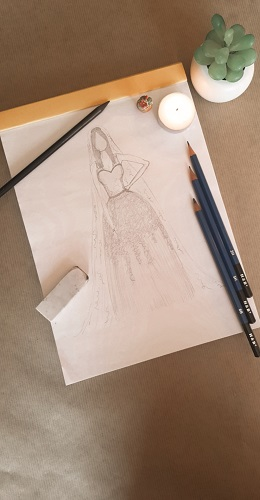
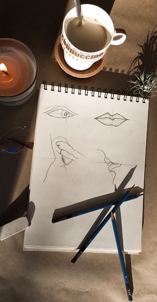
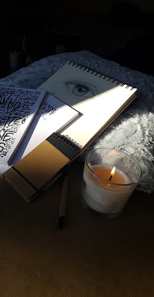
Dessins au feutre noir
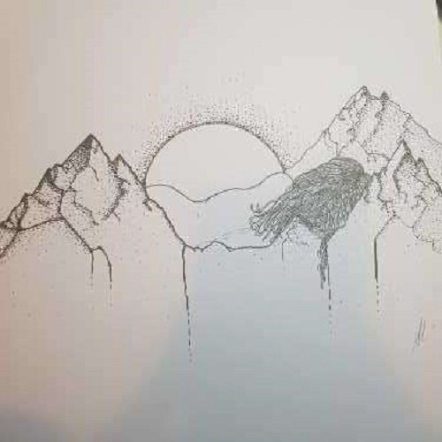
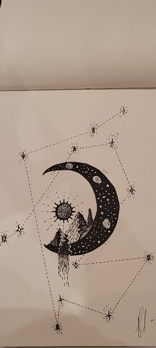
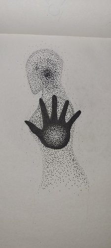
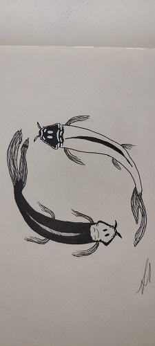
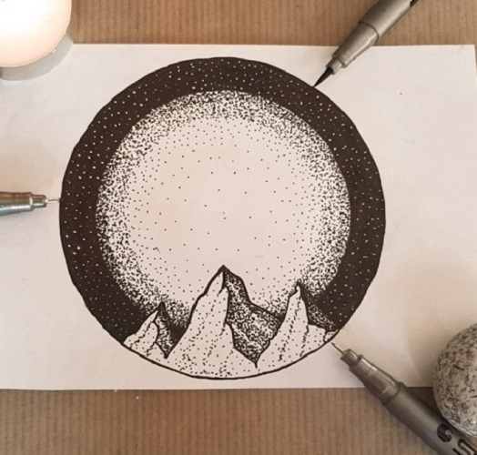
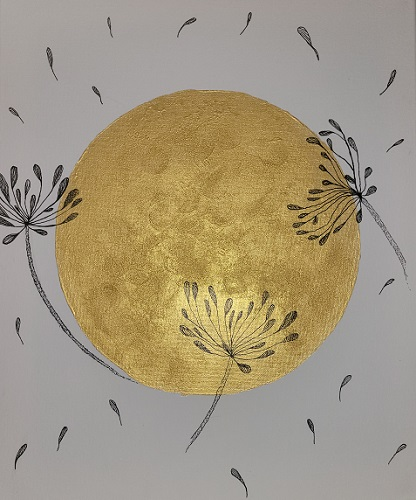
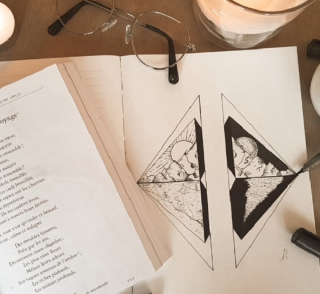
Aquarelle
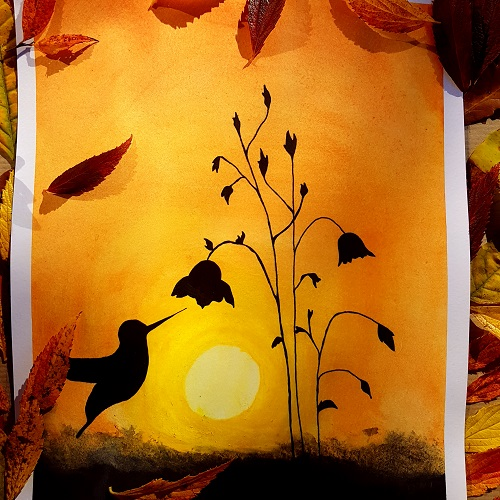
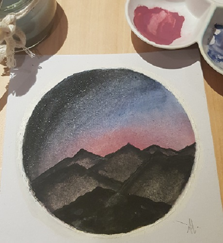
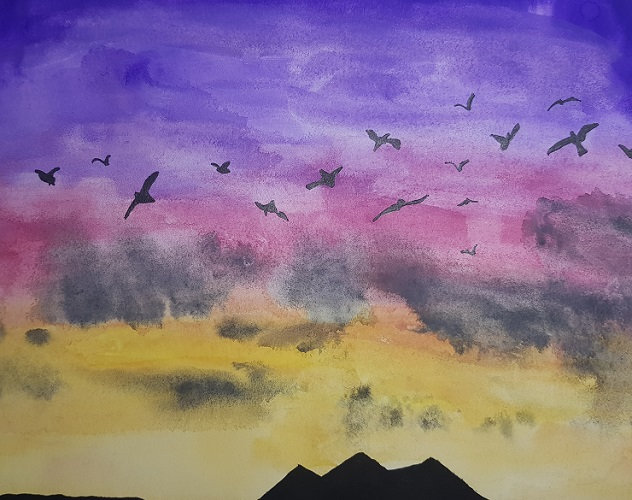
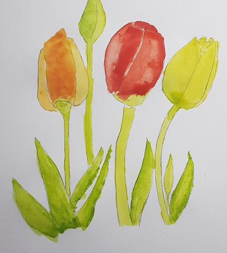
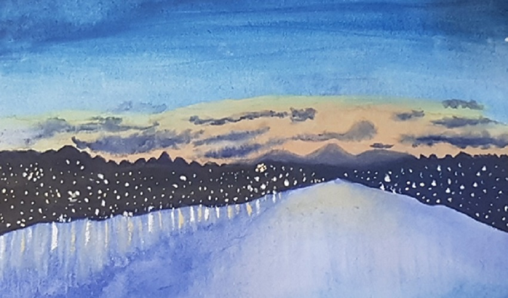
Designs Photoshop


Design Illustrator
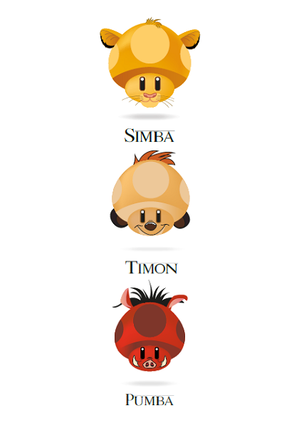
Cliquez ici pour revenir à mes travaux
Cliquez ici pour revenir à l'acceuil